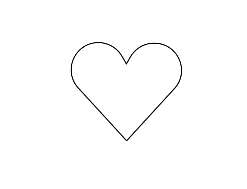
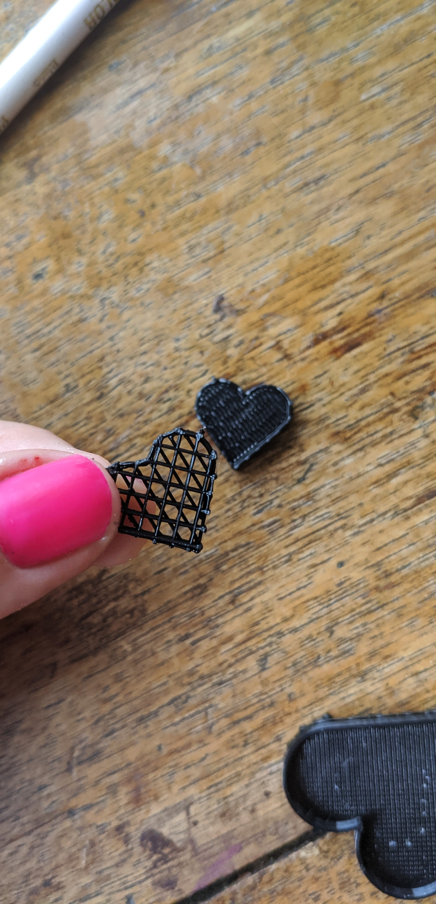
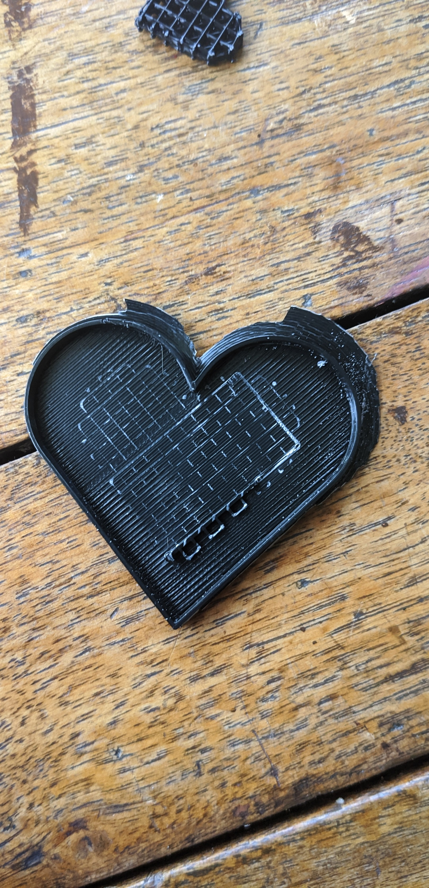

To learn about printing nested geometry and get a better handle on grasshopper, I created these nested heart trays. You can reference my Rhino File and Grasshopper definition here, and see my .STL here! Want to see how I made it? Read on!

I built my heart in illustrator, then imported it into Rhino. There, I was able to begin working in Grasshopper.

I created a polygon component in Grasshopper, then connected my imported geometry to it. I used a linear array to make copies of my shape, then offset their curves at increasing intervals of specified distances to create the nested walls of my trays. I referenced Josh's tutorials to help me properly pair the walls and extrude them as solid objects. Then, I baked my definition and moved the separate trays along the Z axis in Rhino. Crating this spacing allowed me to use the slicer to generate supports, which would allow me to print 3 separate geometries on top of one another.

I generated supports under each of the nested hearts, so they could be deconstructed after printing.



After printing, I detatched the supports and was left with my final trays!